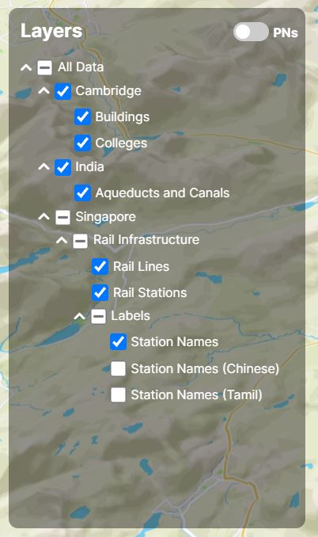
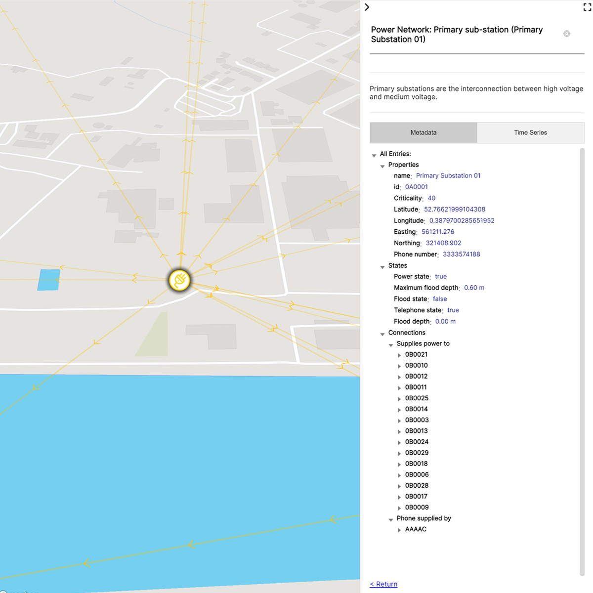
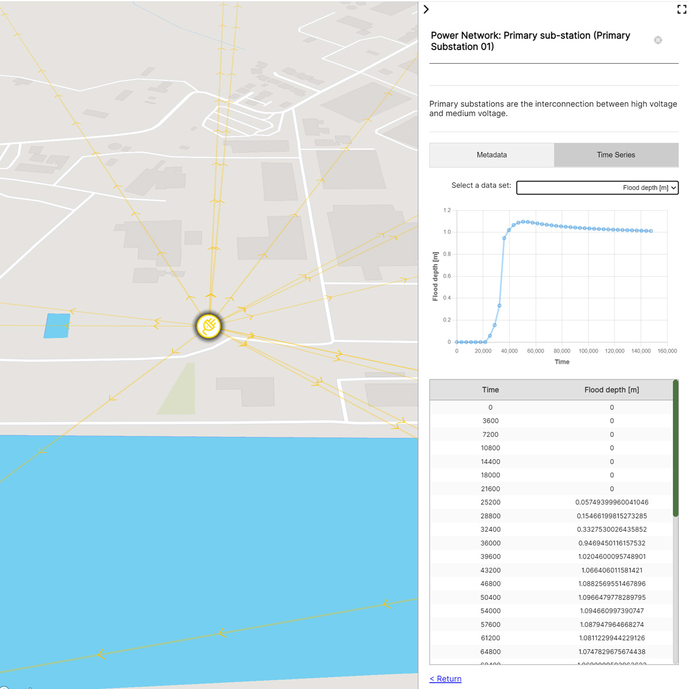
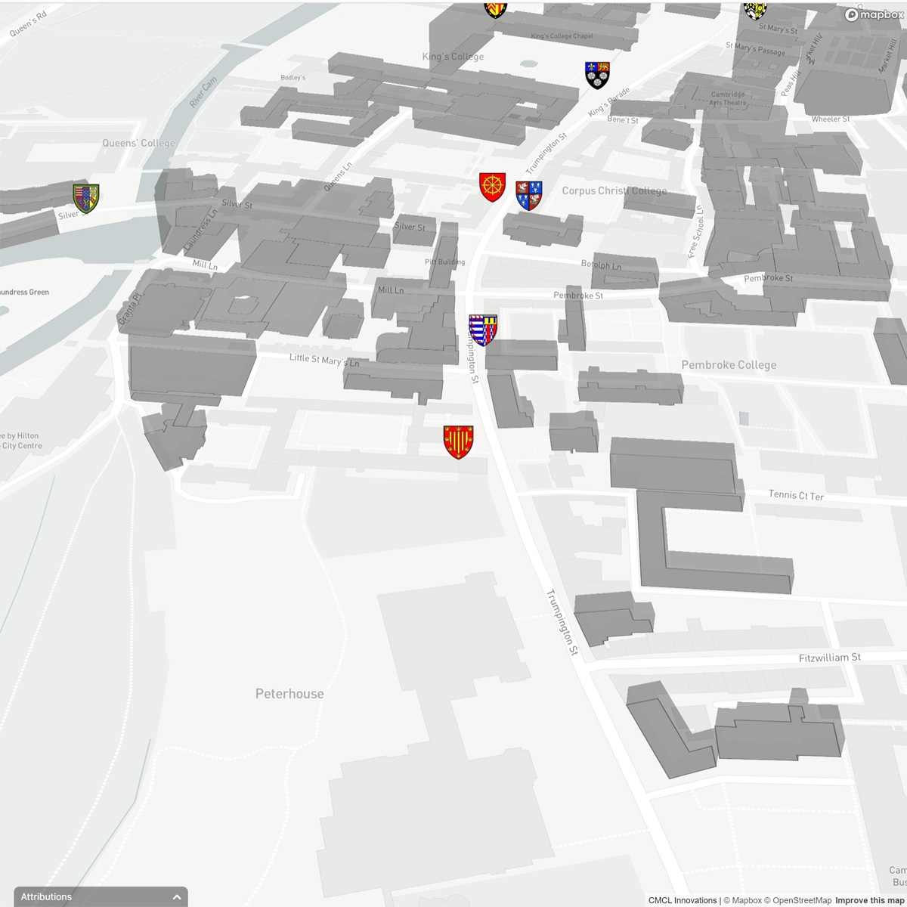
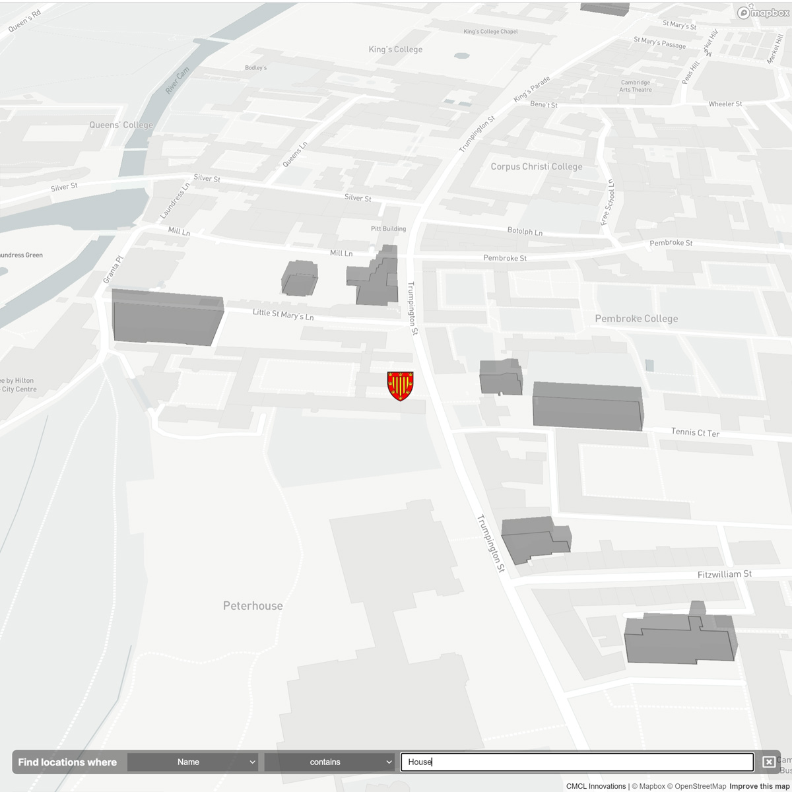

This page provides user-friendly instructions on how to interact with the common functionality provided to all visualisations by CMCL's Digital Twin Visualisation Framework (DTVF). For further assistance, technical support, or details on the data present on the visualisation (or the manner in which it's presented) please contact the CMCL technical team.
Users can interact with the map via their mouse or pointing device, keyboard shortcuts are not supported at the time of writing. Panning can be achieved with the left mouse button, rotating with the right, and zooming can be achieved by zooming the scroll wheel.
A number of different imagery options for the map may have been provided as part of the visualisation; these may include vector-style outlines of streets/terrain, raw satellite images, or a mix. Users can change the currently active imagery layer by selecting the appropriate radio button within the "Imagery" controls on the left-hand side of the visualisation.
In some cases, 3D terrain can also be enabled via the toggle presented alongside the "Imagery" controls.
|
Data may be presented in different layers, grouped in a hierarchy that is most intrinsic to the data. Using the "Layers" panel to the left-hand of the page, users can select individual layers to hide/show the corresponding data on the map, or toggle entire groups of layers on/off with a single click. In certain visualisations, a toggle control to hide or show placename labels is also available at the top of the aforementioned panel. |

Layer controls
|
The side panel is an area to the right-hand side of the visualisation that houses introductory content, the visualisation's legend, and (optionally) a number of links to external resources. The side panel can be collapsed/expanded or fully maximised/minimised at any time using the associated controls.
In addition to static content, the side panel will also display available information on the currently selected location. Depending on the availability of data on the selected location, a tree of associated properties and values is shown; this may be limited to values intrinsic to the selected data set, or in some cases associated data can be queried from remote knowledge graphs or databases.
|

Metadata properties
|

Historical metadata
|
In some visualisations, a simple filter/search functionality is also provided to help users locate features of interest. Accessed via the CTRL+F keyboard shortcut, this feature allows users to enter search terms that filter out all locations that do not match.
Note that any location-based clustering features that have been enabled (i.e. when features group together after zooming out) will be temporarily disabled whilst the search controls are visible. This ensures that users can clearly see what individual locations match the filter without having to worry about the case in which some locations within a cluster match and some do not.
Please note, at the time of writing this filtering functionality is only available in 2D (i.e. Mapbox) visualisations.
|

Before filtering
|

With an active filter
|
In some 3D visualisations, an optional feature is present to vertically bisect data, providing a view of the model(s) up until a changeable height. When supported, users can enable this option by selecting the "Enable clipping planes?" option. Once enabled, selecting an appropriate target layer will enable the clipping plane as well as display a sliding control to change the cut-off height. At the time of writing, the clipping planes feature only supports targeting a single layer at any one time.
Using the sliding control on the right of the page, users can adjust the height of the clipping plane (shown in metres above sea level). If set, specific height levels can also be selected; these, for example, could be used to snap the clipping plane to the height of specific floors within a building model.